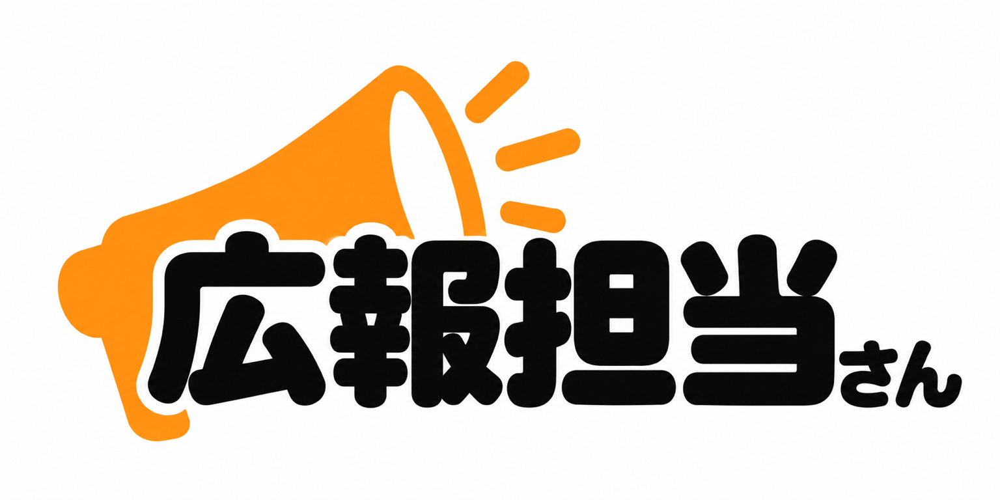

SHORT / フォーマット 01
雨はやんだが…君津市の産廃処分場で起きていること
白を基調に、濃い文字とオレンジの強調色。資料や図を添えて情報を整理する実例です。
YouTubeで開く
公式LINEFORMATS
配色・字幕・資料の入れ方は、ひとつに固定しません。実際の動画を見比べて、伝えたい内容やご本人の雰囲気に合う形を一緒に決めます。
まずは下の2本を比較。文字の見やすさ、色の印象、説明のテンポなど、気に入った部分を打ち合わせでお聞かせください。
SHORT / フォーマット 01
白を基調に、濃い文字とオレンジの強調色。資料や図を添えて情報を整理する実例です。
YouTubeで開くSHORT / フォーマット 02
水色の見出しと黄色の強調文字。現場の映像と会話のテンポを活かした実例です。
YouTubeで開く普段の広報物やロゴとの統一感を大切に。強調したい箇所に色を使います。
スマートフォンでも読める大きさと量に。話題の重要度でメリハリをつけます。
現場を見せる、数字を解説する、質問に答える。目的に合わせて組み立てます。
LONG FORMAT
LONG / 現場を伝える
現場の映像と語りを組み合わせ、背景や課題を伝えるロング動画。
YouTubeで開くどんな場所で、何が起きているのか。
現場の映像と説明で背景を伝える。
課題と今後の取り組みを整理する。
掲載動画は制作実績です。契約時の尺・編集範囲は別途決定します。テンプレート素材の販売ではありません。
LET’S TALK
オンライン相談は無料。動画の内容が決まっていなくても大丈夫です。
広報担当さん / LINE ID：@699bksee